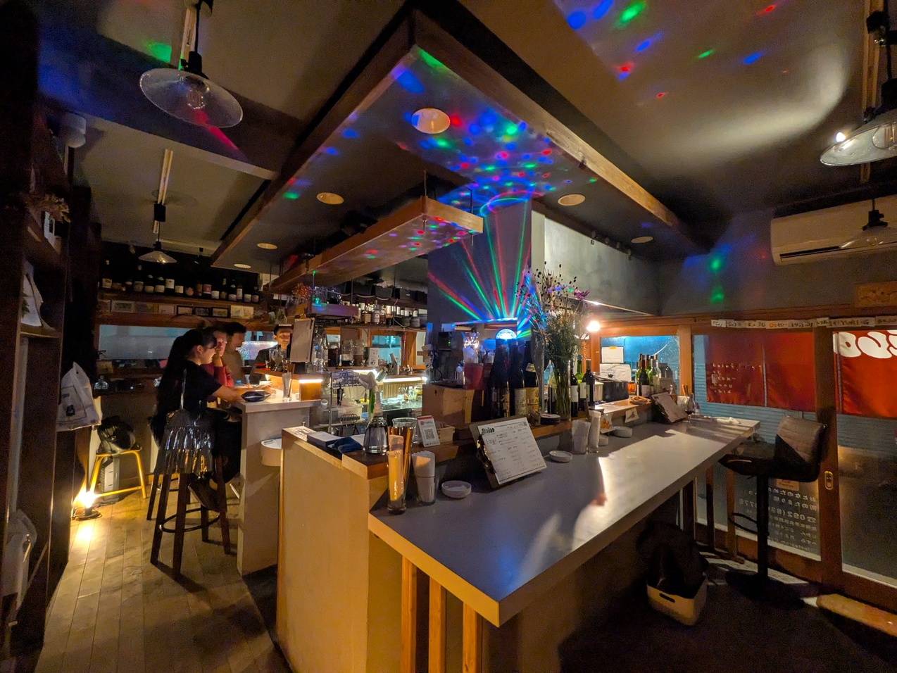
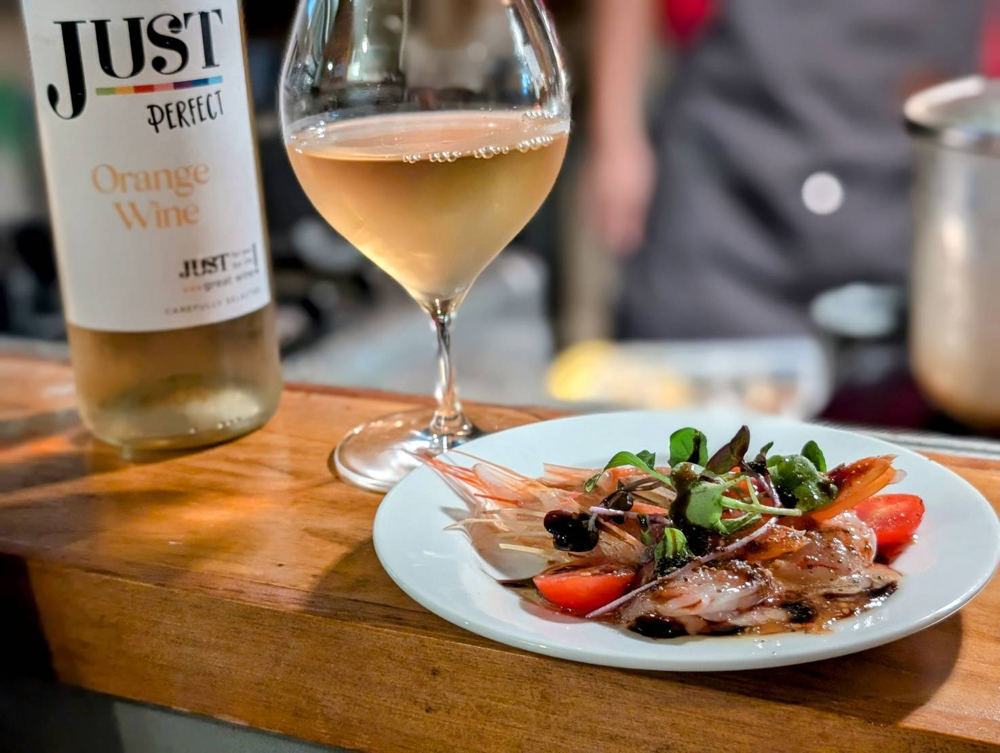
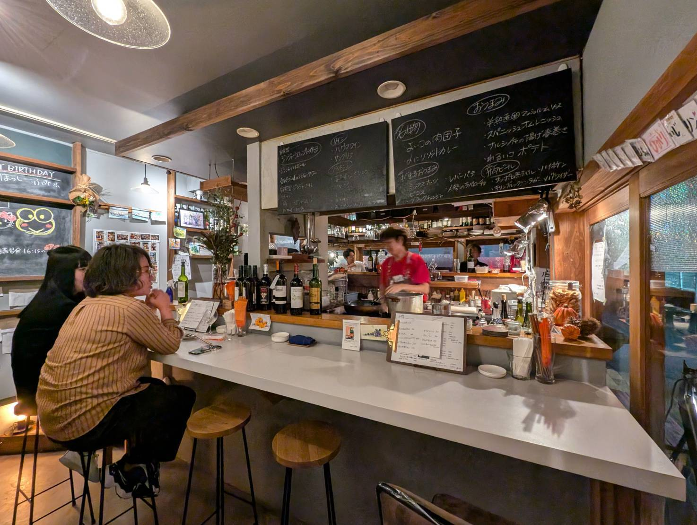
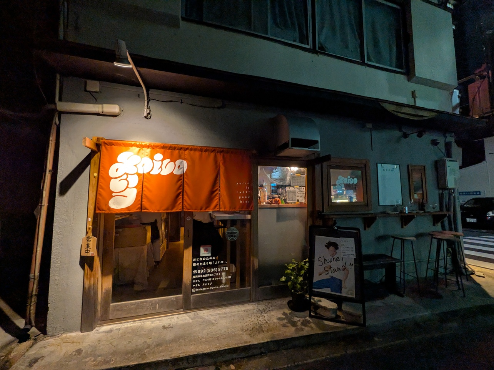

よいコの名物
よいコの名物01 / SPECIALTY
ポルペッティーニ
ころんと、旨みをひと口。
スパイスを効かせた、やわらかな洋風肉団子。
トマトソースで煮込み、チーズをふわり。
ワインと合わせて楽しみたい一皿です。

福岡・西新の洋食酒場
ワインとおつまみ。大人のたまり場。
ご予約なしで、
ふらっとどうぞ。
HELLO, YOICO.
一日の終わりに、もう少しだけ。
朱色の暖簾の向こうで、ひと息つきませんか。
西新の路地裏にある、小さな洋食酒場「よいコ」。
ワインを片手に、手づくりのおつまみを。
コの字のカウンターを囲めば、
ひとりの夜も、誰かと過ごす夜も、心地よく。
気取らず、気ままに。
今日の気分で、ふらっとどうぞ。
A LITTLE BITE, ANOTHER SIP.
洋食を、気軽なおつまみに。
一杯と一緒に楽しみたい、よいコの味。
よいコの名物ころんと、旨みをひと口。
スパイスを効かせた、やわらかな洋風肉団子。
トマトソースで煮込み、チーズをふわり。
ワインと合わせて楽しみたい一皿です。
WINE & CRAFT SOUR
ワインに、自家製クラフトサワー。
おつまみとの組み合わせを楽しんだり、
いつもの一杯で、ほっとしたり。
どれにしようか迷う時間も、よい時間。
お酒を見る ↗
 ONE MORE GOOD MOMENT.
ONE MORE GOOD MOMENT.
AROUND THE COUNTER
カウンターが主役の、小さなお店。
仕事帰りの一杯にも、二軒目の寄り道にも。
立ち飲みならではの気軽さで、
自分らしい夜をお過ごしください。
今日のおつまみや、お店の日々。
最新の様子はInstagramでもお届けしています。
FIND THE ORANGE NOREN

BEFORE YOU DROP IN
ご予約は承っておりません。ご来店順にご案内いたしますので、直接お店へお越しください。
もちろんです。カウンターを中心としたお店で、おひとりでも気軽にお立ち寄りいただけます。
地下鉄空港線「西新駅」から徒歩5分。西新5丁目の路地裏、朱色の暖簾が目印です。
NO RESERVATIONS. JUST DROP IN.
ご予約は承っておりません。
ふらっと、そのままお越しください。